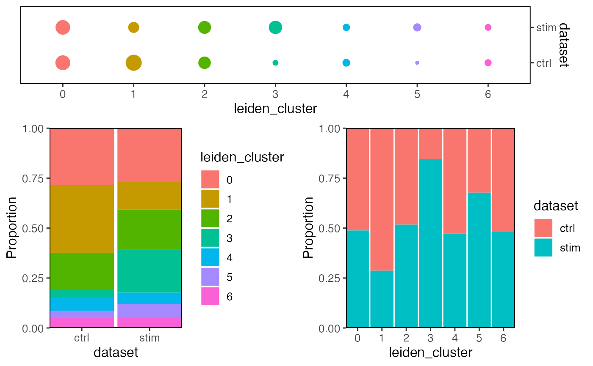
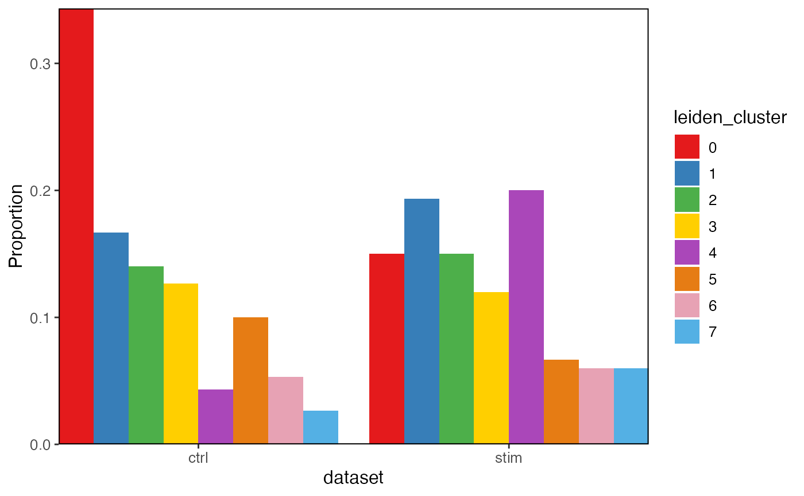
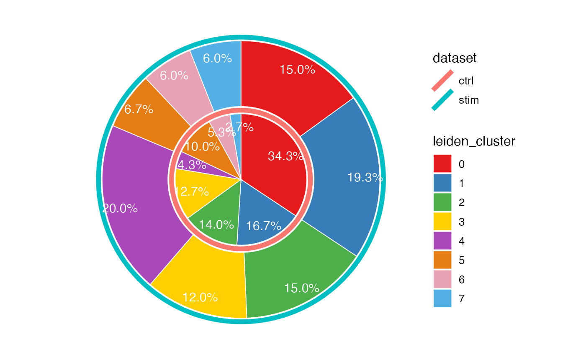

plotProportionBar creates bar plots comparing the
cross-category proportion. plotProportionDot creates dot plots.
plotClusterProportions has variable pre-specified and calls the dot
plot. plotProportion produces a combination of both bar plots and dot
plot.
Having package "ggrepel" installed can help adding tidier percentage annotation on the pie chart.
plotProportion(
object,
class1 = NULL,
class2 = "dataset",
method = c("stack", "group", "pie"),
...
)
plotProportionDot(
object,
class1 = NULL,
class2 = "dataset",
showLegend = FALSE,
panelBorder = TRUE,
...
)
plotProportionBar(
object,
class1 = NULL,
class2 = "dataset",
method = c("stack", "group"),
inclRev = FALSE,
panelBorder = TRUE,
combinePlot = TRUE,
...
)
plotClusterProportions(object, useCluster = NULL, return.plot = FALSE, ...)
plotProportionPie(
object,
class1 = NULL,
class2 = "dataset",
labelSize = 4,
labelColor = "white",
...
)A liger object.
Each should be a single name of a categorical variable
available in cellMeta slot. Number of cells in each categories in
class2 will be served as the denominator when calculating proportions.
By default class1 = NULL and uses default clusters and class2 =
"dataset".
For bar plot, choose whether to draw "stack" or
"group" bar plot. Default "stack".
ggplot theme setting arguments passed to
.ggplotLigerTheme.
Logical, for barplot, whether to reverse the specification for
class1 and class2 and produce two plots. Default FALSE.
Logical, whether to combine the two plots with
plot_grid when two plots are created. Default
TRUE.
For plotClusterProportions. Same as class1
while class2 is hardcoded with "dataset".
defuncted.
Settings on pie chart percentage label. Default
4 and "white".
ggplot or list of ggplot
plotProportion(pbmcPlot)

plotProportionBar(pbmcPlot, method = "group")

plotProportionPie(pbmcPlot)
